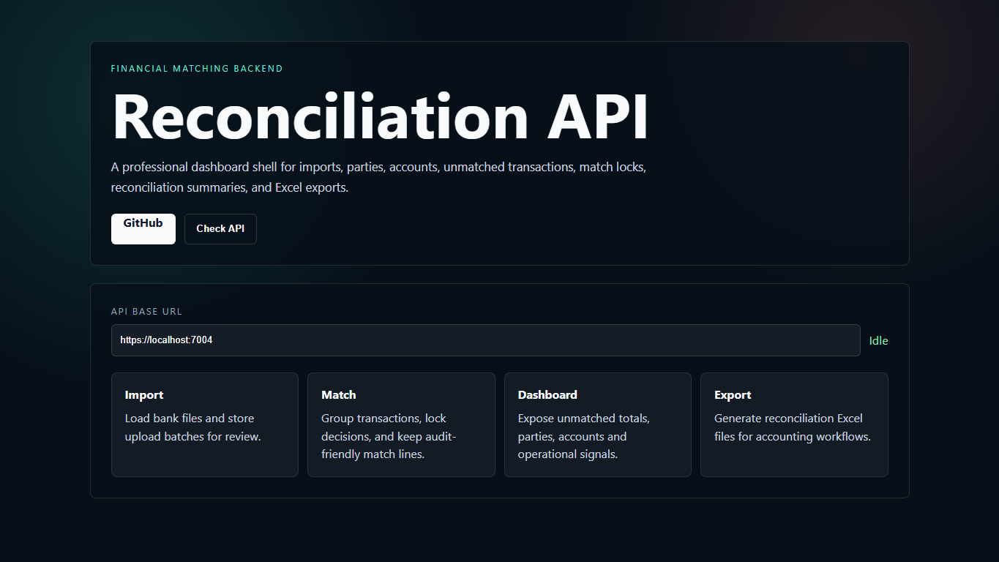
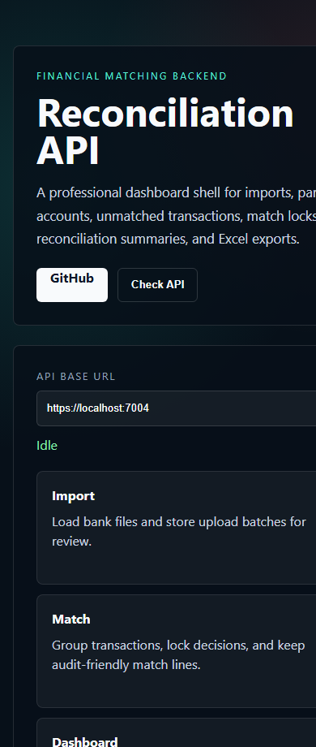

Reconciliation API
Financial reconciliation backend
Backend for imports, parties, accounts, transaction matching, match locks, dashboard summaries and Excel export workflows.
1. Contexte du projet
The API supports financial/accounting users who need to import files, compare transactions, match entries and export reconciliation results.
2. Objectifs
- File import
- Party/account management
- Transaction matching
- Dashboard
- Excel export
3. Acteurs
- Administrator
- Accountant
- Finance reviewer
- Auditor
4. Interfaces et fonctions principales
| Frontend API dashboard | Explains import, match, dashboard and export modules. |
| Import batches | Upload and track transaction files. |
| Accounts and parties | Manage entities involved in financial transactions. |
| Reconciliation dashboard | View unmatched transactions and global dashboard metrics. |
| Matching workflow | Create match headers/lines and lock decisions. |
| Export | Generate reconciliation Excel outputs. |
5. Technologies utilisees
ASP.NET Core 9Entity Framework CoreSQL Server LocalDBJWTExcel import/export
6. Travail en equipe / collaboration
Collaboration project: backend contribution inside a shared financial application, with focus on import, matching and export workflows.
7. Captures d'ecran reelles


8. Liens
Repository: https://github.com/tayebzitouni/Reconciliation_Back
Demo: Frontend preview included in the repository for local presentation.